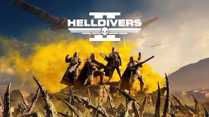

Helldivers

Das Helldivers Webseite-Projekt ist eine informative Website über das Spiel "Helldivers",
entwickelt mit HTML, CSS und JavaScript. Die Website bietet eine übersichtliche Darstellung
der Spielinhalte, einschließlich Details zu den Charakteren, Waffen und Spielmodi.
Sie enthält interaktive Elemente und ansprechende Designs, die das Spielerlebnis und die
Community-Interaktion fördern. Dieses Projekt zeigt grundlegende Webentwicklungskompetenzen
und die Fähigkeit, eine ansprechende, benutzerfreundliche Online-Präsenz zu erstellen.
Direktlink zu Git-Hub Projekt.